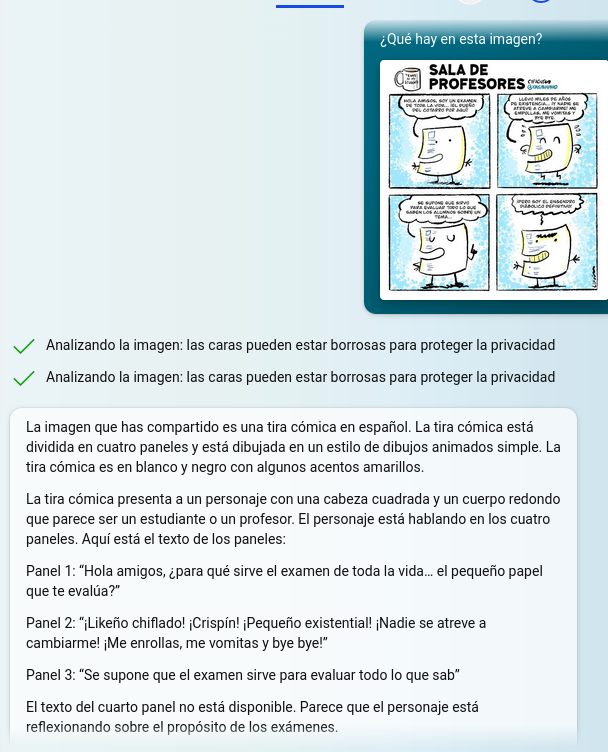

Transcripción Visual
Bard y Bing Chat (y también ChatGPT en su versión de pago Plus) pueden extraer información de una imagen para darnos una descripción e incluso, extraer el texto que contienen. En el caso de Bard podemos pegar la imagen que hemos copiado o subirla desde el dispositivo, en el caso de Bing no podremos pegarla, pero sí podremos subirla.
Privacidad
Bard rechazará directamente las fotos que contengan personas, se negará a decir lo que contienen y eliminará la foto. El comportamiento de Bing es algo diferente, parece que él mismo borra las caras de las personas (es algo que dice, pero no se ve) y entonces intenta interpretar el resto.
Este es un ejemplo con la famosa imagen de los hermanos Marx de la película "Una noche en la ópera".
Extraer texto de una imagen
| En este ejemplo hemos puesto una viñeta en Bard y le hemos preguntado qué es. La transcripción del texto es precisa y también la interpretación, sin embargo, el contexto (profesor sentado en un escritorio en una sala de profesores) es una deducción errónea. |
|
Elaboración propia. Interpretación de una imagen por Bard. Origen la imagen analizada (CC BY-SA) |
| Hemos subido la misma imagen con el mismo prompt a Bing y el resultado no es bueno, ya que no identifica correctamente el texto: |
 |
Elaboración propia. Interpretación de Bing de la misma imagen (CC BY-SA) |
|
En este caso se le ha pasado a Bard una infografía y se le ha pedido que extraiga el texto literalmente, cosa que hace razonablemente bien, aunque cambia de lugar algunos puntos, también nos proporciona una pequeña explicación del contenido (aunque esta tarea sería preferible dársela a ChatGPT). Puede verse la respuesta completa de Bard, así como la imagen original, en el enlace. |
|
Elaboración propia. Origen de la imagen. Interpretación de una infografía por parte de Bard (CC BY-SA) |
| Si le damos una captura de pantalla o una imagen de un texto escrito con ordenador, la transcripción suele ser fiel. Puede verse el ejemplo completo en el enlace. |
|
Elaboración propia. Transcripción literal de una captura de pantalla (CC BY-SA) |


{kind=link}
Viendo estos ejemplos podemos constatar que el papel de Bard es muy superior al de Bing, probablemente esto es debido a que Bard utiliza Google Lens para interpretar las imágenes, una tecnología con muchos años de recorrido que hace que los resultados sean tan buenos.